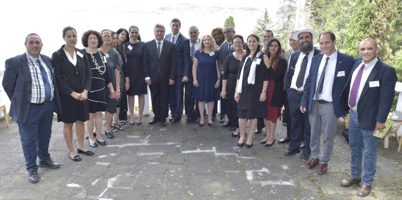
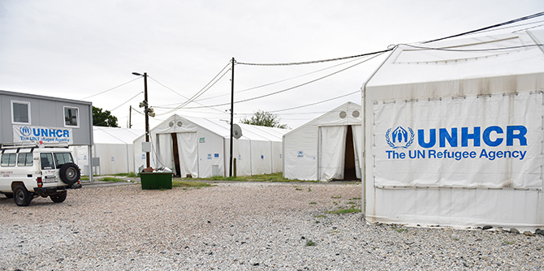

Sixteen graduates of the Mandel School for Educational Leadership embarked on a week-long study trip to Macedonia, which was the culmination of a seminar on immigration, migration, and refugees that began in February and included sessions on the topic from a local perspective. The study trip, which took place from July 16-23 2017, allowed the graduates to examine the issue of refugees and migration in contemporary Europe from a global perspective, while also gaining a local view of the waves of migration the country has experienced. Macedonia was chosen because of its central position in the movement of refugees through the Balkans: during the refugee crisis in Europe in 2015-2016, more than 700,000 refugees and migrants passed through its borders.

Dr. Gjorge Ivanov, President of Macedonia, hosts Mandel graduates at the President's Residence in Ohrid
During the trip, the graduates learned about the phenomenon of migration in Macedonia from several perspectives: crisis management, decision-making processes, changes in policy and legislation, economic and social limitations. They also explored influential international factors such as change in policies of the European Union, the relations between Macedonia and Greece, and Macedonia’s request to join the European Union and NATO.
The week began with a trip to the Gevgelija refugee camp on the border with Greece, which serves as the entry point for migrants arriving in Macedonia mainly from Syria and Iraq via Turkey and Greece. There, the group was hosted by the director of the refugee camp and by the local police commissioner. They met with an array of senior officials: the ministers of labor and social policy, defense, and culture, as well as the former foreign minister, who led the negotiations with EU countries during the refugee crisis.
The graduates heard both formal and informal voices. One of the high points of the trip was a two-hour meeting with the President of Macedonia, Dr. Gjorge Ivanov, who provided a detailed review of the historical context of migration, and explained the financial and multicultural challenges it poses, for both the present and the future. The informal voices included the Mufti of Bitola (the second-largest city after the capital, Skopje), and representatives of local and international aid organizations who are active in the refugee camps and who work with asylum seekers (of whom there have been very few).
While the history of the Jewish community in Macedonia was not the focus of the visit, the story of this small community, which dates back to the 16th century, was a recurring theme throughout the trip. The graduates visited the Jewish cemetery in Bitola, which is being renovated at the initiative of young local residents. In the capital city of Skopje, they visited the site from which the entire Jewish community of Macedonia – 7,144 men, women, and children – were sent to Treblinka in March 1943. None of them survived. They toured the Holocaust Memorial Center for the Jews of Macedonia, which was established by a foundation funded by the government of Macedonia. The group also met with the president of the Jewish community of Macedonia, which numbers some 200 people, and attended a Shabbat dinner at the community center.
The study trip was planned in partnership with Ambassador Dan Oryan, Israel’s non-resident ambassador to Macedonia and director of the Balkans Section at the Ministry of Foreign Affairs. He was the driving force behind arranging the high-level meetings that allowed the group to hear such a diverse range of voices. During the trip, the group also attended a formal reception organized by the ambassador to mark Israel’s Independence Day.

{kind=link}
{kind=link}